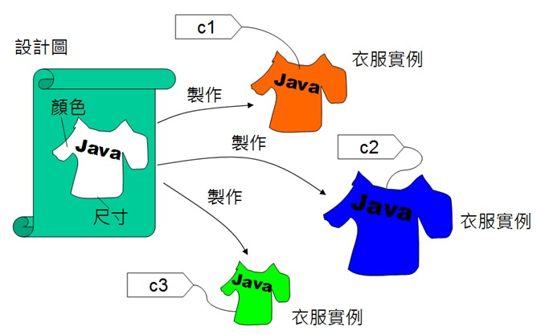
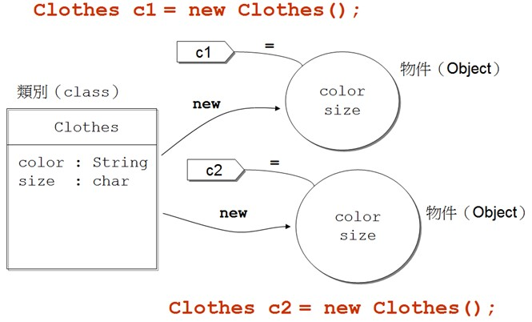

定義類別
May 23, 2022來看看如何為衣服建模？你會有個衣服的設計圖，上頭定義了衣服的款式與顏色、尺寸，你會根據設計圖製作出實際的衣服，每件衣服都是同一款式，但會擁有自己的顏色與尺寸，你會為每個衣服別上一個名牌，這個名牌只能別在同款式的衣服上。

使用 class
如何使用 Java 告訴電腦衣服的設計圖呢？你會先在程式中定義類別，這相當於上圖中衣服的設計圖：
class Clothes {
String color;
char size;
}
類別定義時使用 class 關鍵字，名稱使用 Clothes，相當為衣服設計圖取名為 Clothes，衣服的顏色用字串表示，也就是 color 變數，可儲存 "red"、"black"、"blue" 等值，衣服的尺寸會是 'S'、'M'、'L'，所以用 char 型態宣告變數。如果要在程式中，利用 Clothes 類別作為設計圖，建立衣服實例，要使用 new 關鍵字。例如：
new Clothes();
在物件術語中，這叫作新建一個物件。如果要有個名牌，專門綁到這個物件上，可以如下宣告：
Clothes c1;
在 Java 的術語中，這叫宣告參考名稱（Reference name）、參考變數（Reference variable）。如果要將 c1 綁到新建的物件上，可以使用 = 指定，以 Java 的術語來說，稱為將 c1 名稱參考（refer）至新建物件。例如：
Clothes c1 = new Clothes();
可以將程式語法如下圖表示，直接對照上圖，你就可以瞭解類別與物件的區別，以及 class、new、= 等語法的使用：

若編譯器能從前後文推斷出區域變數型態，可以使用 var 宣告變數：
var clothes = new Clothes();
在 Clothes 類別中，定義了 color 與 size 兩個變數，以 Java 術語來說，叫作定義兩個值域（Field）成員，或叫作定義兩個物件資料成員，這表示每個新建的 Clothes 實例，可以擁有個別 color 與 size 值。例如：
package cc.openhome;
class Clothes {
String color;
char size;
}
public class Field {
public static void main(String[] args) {
var sun = new Clothes();
var spring = new Clothes();
sun.color = "red";
sun.size = 'S';
spring.color = "green";
spring.size = 'M';
System.out.printf("sun (%s, %c)%n", sun.color, sun.size);
System.out.printf("spring (%s, %c)%n", spring.color, spring.size);
}
}
這邊定義了兩個類別，一個是公開（public）的 Field 類別，所以檔案主檔名必須是 Field，另一個是非公開的 Clothes，一個原始碼中可以有多個類別定義，但只能有一個是公開類別，且檔案主檔名必須與公開類別名稱相同。
程式中建立了兩個 Clothes 實例，並分別宣告了 sun 與 spring 兩個名稱來參考，接著要求 JVM，將 sun 綁定物件上的 color 與 size 分別指定為 "red" 與 'S'，將 spring 的 color 與 size 分別指定為 "green" 與 'M'。最後分別顯示 sun、spring 的資料成員值。
執行結果如下，可以看到 sun、spring 各自擁有自己的資料成員：
sun (red, S)
spring (green, M)
建構式
可以觀察這個範例中，為個別物件指定資料成員值的程式碼，你會發現是類似的，如果想在建立物件時，一併進行某個初始流程，像是指定資料成員值，可以定義建構式（Constructor），建構式是與類別名稱同名的方法（Method）：
package cc.openhome;
class Clothes2 {
String color;
char size;
Clothes2(String color, char size) {
this.color = color;
this.size = size;
}
}
public class Field2 {
public static void main(String[] args) {
var sun = new Clothes2("red", 'S');
var spring = new Clothes2("green", 'M');
System.out.printf("sun (%s, %c)%n", sun.color, sun.size);
System.out.printf("spring (%s, %c)%n", spring.color, spring.size);
}
}
在這個例子中，定義新建物件時，必須傳入兩個引數給字串型態的 color 參數（Parameter）與 char 型態的 size 參數，而建構式中，由於 color 參數與資料成員 color 同名，你不可以直接寫 color = color，這是將 color 參數的值指定給 color 參數，而要使用 this 表示，將 color 參數的值指定給這個物件的 color 成員。
在實際使用 new 建構物件時，就可以直接傳入字串與字元，分別代表 Clothes 實例的 color 與 size 值，執行結果與上個範例是相同的。
初試 record 類別
這邊只不過是定義類別，就物件導向的封裝（Encapsulation）而言，只是單純地將顏色與尺寸的資料組合衣服的資料，就這個簡單的需求而言，Java 16 以後，可以使用 record 類別來定義：
package cc.openhome;
record Clothes3(String color, char size) {}
public class Field3 {
public static void main(String[] args) {
var sun = new Clothes3("red", 'S');
var spring = new Clothes3("green", 'M');
System.out.printf("sun (%s, %c)%n", sun.color(), sun.size());
System.out.printf("spring (%s, %c)%n", spring.color(), spring.size());
}
}
在定義 record 類別時，不需要加上 class 關鍵字，類別名稱取接著就是定義 record 類別的預設建構式，對於以上定義的衣服類別，在語義上是在告訴其他開發者（或未來閱讀程式碼的自己），這裡定義了衣服，用來記錄衣服的資料，資料是以 color 與 size 的順序構成，學生實例建立時指定的資料，就是實例唯一的狀態，除此之外沒有別的意涵了。
也就是說，定義 record 類別時指定的欄位名稱、順序，用來組成了資料的結構，編譯器預設會為指定的欄位名稱生成值域，以及同名的方法，就上例來說，就是會生成 name() 與 number() 方法，傳回對應的值域。
record 類別的值域無法變動，這是為了限制你，定義資料載體（data carrier）才使用 record 類別，就目前來說可以知道的是，單純地將顏色與尺寸的資料組合衣服的資料，就是將衣服作為資料載體的概念。